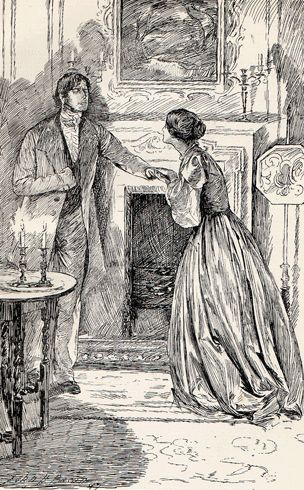

У каждого человека есть то, чем он любит заниматься. Это может быть живопись, занятия кулинарией, музыкой, хореографией.
Кто-то читает, кто-то гуляет и любуется природой. У всех есть хобби. Одним из моих интересов является чтение.
Читая книгу, я, с одной стороны, отдыхаю. С другой стороны, узнаю много нового и интересного.
Хочу рассказать о некоторых своих фаворитах.
|
Книги – маяки, возведенные в великом море времени. Е.П. Уиппл
|
«Поющие в терновнике»
Название книги
Существует легенда: есть на свете птица, которая поет песню лишь раз в жизни, но делает это прекраснее всех.
Одного дня она отправляется на поиски тернового куста и не перестает искать, прежде чем не найдет его.
В зарослях колючих веток она запевает песню и бросается грудью на самый большой шип.
Птицу терзают несказанные муки, умирая, она поет так, словно возносится в рай на небеса.
Такой песне бы позавидовали соловей и жаворонок. Чувственная, единственная песнь стоит ей жизни.
Весь мир замирает и сам Бог улыбается. Ведь все лучшее достается лишь путем испытаний и страданий.
Так гласит легенда.
О чем книга?
История берет свое начало в 1915 году и продолжается более полстолетия. В романе описывается жизнь трех поколений Клири.
Это настоящая семейная сага с захватывающими путешествиями во времени австралийской семьи.
Главная героиня юная Мэгги Клири. Мы наблюдаем за ее взрослением с первых страниц.
Девушка еще ребенком влюбляется в священника Ральфа. Их чувства взаимны, однако его долг перед церковью не позволяет влюбленным быть вместе.
«Джен Эйр»

О чем книга?
Книга «Джэн Эйр» рассказывает о жизни бедной девушки, которой уже в детстве пришлось пережить немало испытаний.
Родители Джэйн умерли, когда она была совсем малышкой, и ей пришлось терпеть издевательство недобрых родственников.
Когда девочка подросла, она устроилась работать в дом богатого хозяина в роли гувернантки его дочери.
Постепенно героиня полюбила не только чуткую и внимательную девочку, но и ее жесткого и не совсем понятного многим отца.
Приключения и невероятные повороты, постоянно держат читателя в напряжении, интрига сюжета раскрывается лишь в самом конце книги.
«451 градус по фаренгейту»
Название книги
Что же значат цифры 451? Это температура в Фаренгейтах, при которой воспламеняется бумага. В переводе в градусы Цельсия это – 233 градуса.
О чем книга?
Автор показывает тоталитарный строй, в котором господствует потребительское мышление, а массовая культура практически полностью вытеснила книги,
заставляющие думать.
Более того, правительство способствует уничтожению литературных произведений.
Жизнь обычного человека состоит только из работы и отдыха, на другие виды деятельности времени просто нет.
При этом под проведением досуга подразумевается просмотр телевизора или езда по городу на реактивных машинах.
От такого образа жизни люди постепенно черствеют, уединяются, перестают любить друг друга, не заводят детей…
Но есть горстка «других» (инакомыслящих), которые не приняли правила игры и скрываются от властей, продолжая оставаться собой.
Рэй Брэдбери показывает, что любой человек может измениться, важно лишь желание.
Гай Монтэг, главный герой книги, живой тому пример: из исправного винтика системы он превращается в полноценную личность,
и способствует этому удивительное стечение обстоятельств…
Обратно на главную страницу
|